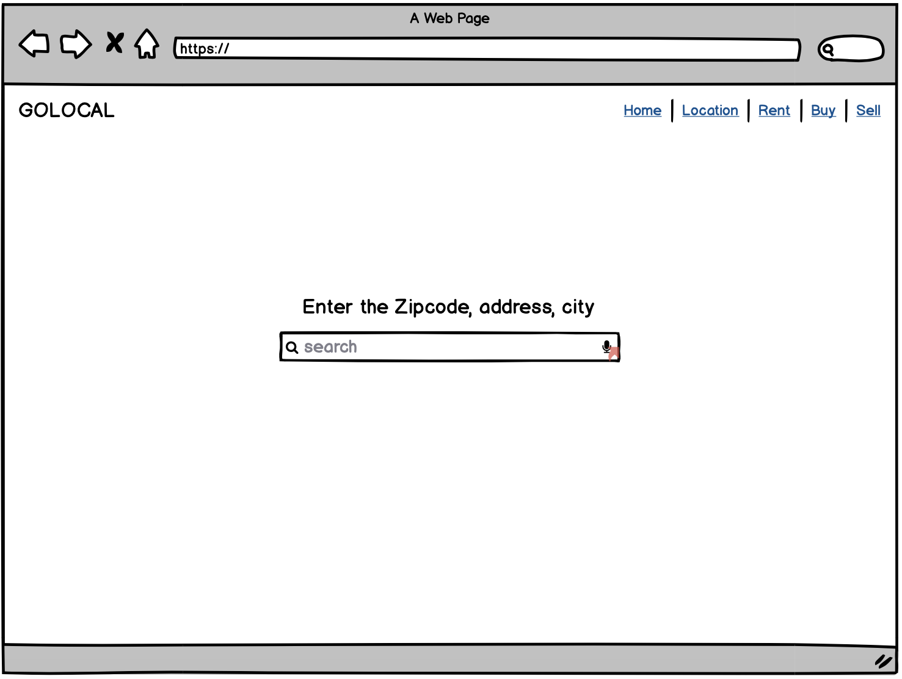
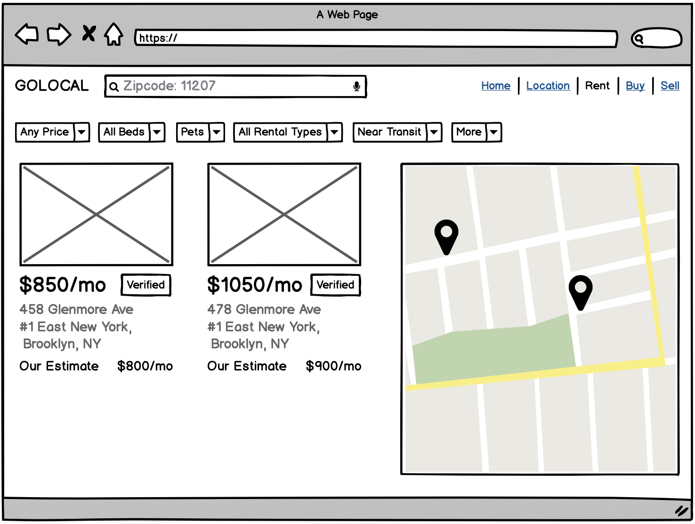
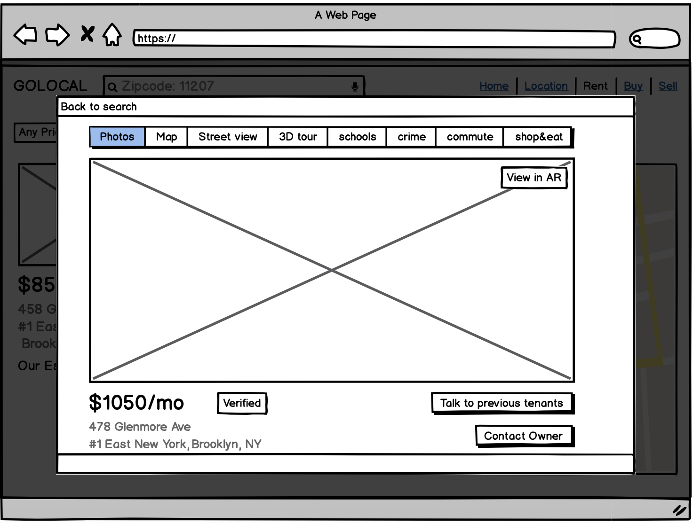

Story
When I was researching for my mid-term, I interviewed several people and got to know about the websites
they looked for while looking for a place/room. But none of them helped in any way. They got the lead
either through a friend of friend or through Facebook groups.
So, I asked them What the problems they were facing while looking on the website were? Or What kind of
things they want the website should have?
Concept
So, I came up with the features and things they were saying and is must-have for a website to help you
find your home.
1. Verified Listing: I think this is one of an essential feature, website should have, because this will
make
the user trust that listing and the site also.
2. Commute: Instead of going to google maps and checking the travel time from that particular place to
your
work location is a problem. So, you can check the commute time by just adding your work location then and
there.
3. 3D Tour: Giving 3D tour feature for all the listings will give more insights and a better understanding
of
the place rather than just showcasing the room images.
4. AR: Having an AR feature can help the user see the room wherever they are. No need to go and see the
place. You see an AR version of the room; first, you like it, then you can go and finalize the room.
Apart from it, the other features are covered by some of the sites like Trulia and Zillow, which give you
insights about the crime rate of that area and places to shop and eat nearby that place.
Also, so one of the person also said, it would be great of you could talk to the previous tenants that
have lived there for an year or so and you can ask them questions on that particular website/portal and
get to know more about that place.


